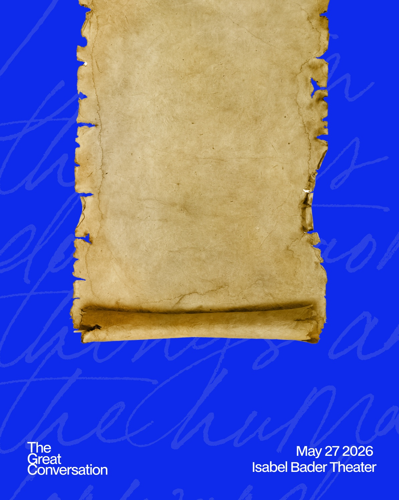

The Great Conversation
"Within each of us there is a drive
to do extraordinary things and
move the human project forward."
We are told to maximize our agency, to "just do things." But how do we know which things are worth doing? We have been telling the story of technology backwards. Our tools—steam engines, silicon chips—take center stage, but tools are merely the image of their creators. The point is people: what they know, who they learned it from, and what they chose to do with the power that knowledge gave them.
And you are one of them.
As a technologist, you are the inheritor of a tradition. This tradition is a grand swirling conversation across generations of what it means to be human. To be a technologist is to have a theory of what it means to be human, and to make that theory concrete through the craft of engineering and design.
Technologists do not merely build; we use the things we build to shape the world around us, through politics, media, medicine, culture, finance, and beyond. You owe it to yourself to meet your ancestors—the thinkers, tinkerers, and misfits whose ideas influence yours, whether you are aware of it or not, and whose work made yours possible.
Our best resource for this self-understanding is history—the archive of our collective triumphs, failures, and learnings over the millenia. We have a particular responsibility to understand our history as Canadians, the inheritors of a unique and rarely discussed technological inheritance.
We are all part of something bigger than ourselves. It is a conversation that stretches across millenia and collectively enables us to shape the world.
You have been part of this conversation your entire life. You just haven't been formally introduced.
We are historic actors; not mere experiencers of the world, but a part of the grand tradition of shaping it.
Connect to the source of ideas that shape the world, in so doing, find yourself shaping the world too.
